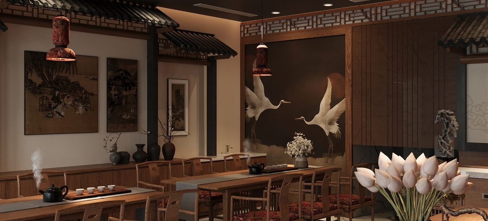

Dừng lại
một chén trà,
lắng nghe cơ thể
Phòng trà dưỡng sinh ấm cúng, workshop chăm sóc sức khoẻ và ban công xanh ngâm chân dược liệu — trước khi lên tầng chăm sóc.
Mỗi người là người
chủ động chăm sóc mình
Biết lắng nghe cơ thể, thực hành thói quen phù hợp và lan toả đến gia đình. AN là an Tâm — an Thân; SAN là lan toả thói quen khoẻ đến người thân.
- 01
Trà dưỡng sinh
Phòng trà khoảng 20 chỗ. Trà sư pha trà, kể chuyện tinh hoa Y học cổ truyền.
- 02
Ngâm chân dược liệu
Thùng gỗ giữa cây xanh trên ban công, kèm trà. Thư thái — dễ thử — cảm nhận ngay.
- 03
An dưỡng chân, đầu, vai gáy
Những dịch vụ nhẹ để bắt đầu, trước khi chọn liệu trình ở Không gian Thân.
Giá dịch vụ nhẹ ở Không gian Tâm đang chờ duyệt — niêm yết tại cơ sở.

Workshop cộng đồng
Tối thứ Ba
và thứ Sáu
Bàn trà dài cho các buổi workshop chăm sóc sức khoẻ tại Không gian Tâm. Chủ đề từng buổi công bố trên trang này và Zalo OA của cơ sở.
Đã nhận đăng ký. Lễ tân sẽ nhắn lịch qua Zalo. (Bản thiết kế — chưa gửi đi đâu.)
Dành cho khách mới
Combo Tâm — Thân
Thưởng trà, ngâm chân ở tầng 1 rồi lên tầng 2 chăm sóc — trải nghiệm cả hai không gian trong một lần ghé.
Giá đề xuất, chờ duyệt.
Đặt lịch combo